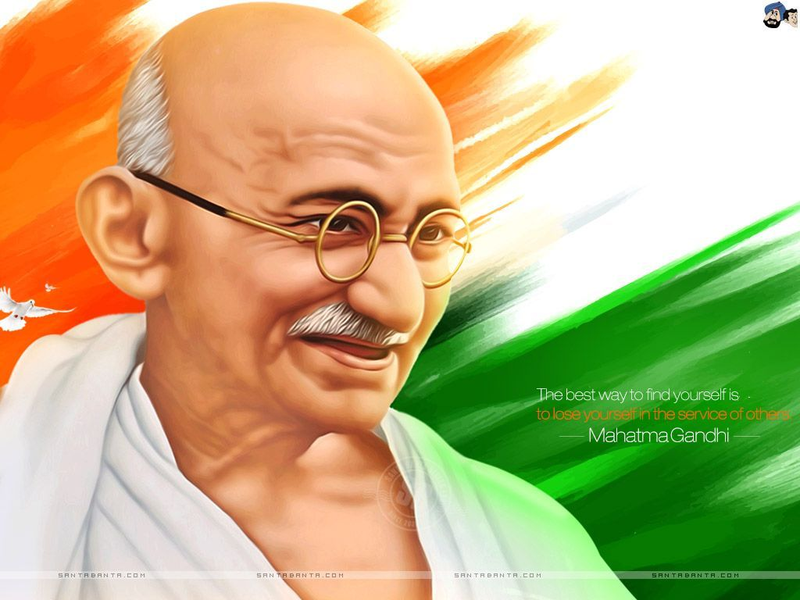

MAHATMA GANDHI
The man who gave India freedom
Mahamta is seen here spinning his wheel to make his own cotton clothes. He always advised Indian people to be self reliant.

Mahatma Gandhi
Here's a time line of Mahatma's life:
- 1869 - Born at Porbandar, India
- 1883 - Got married to Kasturba Makhandas Kapadia at a young age of 13, as per the prevalent regional custom at that time.
- 1888 - Dropped out of college and left to study law at London. His family was against his decision to move to london for studying law. They feared that he would abandon his religion and family after going to Britain. But he dissuaded them by taking a vow that he would abstain from meat,alcohol and women during his stusies there. He kept his words.
- 1891 - Graduated as a Barrister from London and returned to India. Tried to establish a law business at the then Bombay for 2 years but failed.
- 1893 - Went to South Africa to work as a lawyer for a shipping company. He spent 21 years in South Africa. This period turned out to be the turning point in his life. After suffering the atrocious racist regime first hand, he took up the cause of fellow Indians and tought them to fight back by using non-violent means.
- 1906 - Launched his idea of Satyagraha or They way of the Truth to protest against a new law requiring compulsory registraion of Indians and Chinese.
- 1915 - Returned to India and joined the Indian National Congress. His orientation to Indian political situation, Indian people and their issues happened under the tutelage of Gopal Krishna Gokhale.
- 1917 - His first major achievement came during the Champaran peasants movement of Bihar. Gandhi squeezed out much of the demands of the peasants from the British authorities after successfully leading a popular non-violent agitation
- 1930 - Gandhi organised the famous Salt March to Dandi from 12 March to 6 April, where he marched 388 kilometres (241 mi) from Ahmedabad to Dandi, Gujarat to make salt himself. Thousands of Indians joined him on this march to the sea. This campaign was one of his most successful at upsetting British hold on India; Britain responded by imprisoning over 60,000 people.
- 1942 - Gave a speech calling for the British to quit India for good. This speech was the precursor to the most powerful yet non-violent Quit India movement against the British colonial oppession in India. The British rulers understood that they must cede powers slowly and allow the Indians to self-rule.
- 1944 - He was given the popular title of the father of the nation by another legendary revolutionary Subhash Chandra Bose from a radio broadcast from Singapore.
- 1947 - India became independent of the British rule.
- 1949 - Mahatma was assasinated by Nathuram Godse.
"In my life I have always looked to Mahatma Gandhi as an inspiration, because he embodies the kind of transformational change, that can me made when ordinary people come together to do extraordinary things."